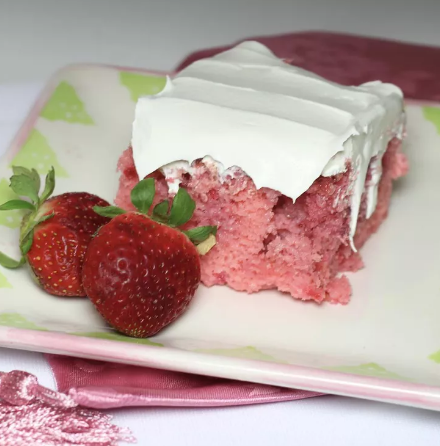

Strawberry Crumb Cake

Description
Another delightful, sweet cake for all the strawberry lovers. Perfect for summer, but make sure you plan ahead if you want to enjoy!
Ingredients:
- 1 (16.5 ounce) package strawberry cake mix
- 1 cup water
- 3 large eggs
- 1/3 cup vegetable oil
- 1 (14 ounce) can sweetened condensed milk
- 1 (16 ounce) package frozen sweetened strawberries, thawed but not drained
- 1 cup buttermilk
- 2 large eggs, at room temperature
- 1 tablespoon vanilla extract
- 1 (12 ounce) container frozen whipped topping (such as Cool Whip), thawed
Steps:
- Preheat the oven to 350 degrees F (175 degrees C). Grease a 9x13-inch baking dish.
- Mix strawberry cake mix, water, eggs, and oil together in a bowl using an electric mixer on low speed. Increase speed to medium and mix batter for 2 minutes. Pour batter into the prepared baking dish.
- Bake in the preheated oven until a toothpick inserted in the middle of the cake comes out clean, 24 to 27 minutes.
- Poke holes all over the cake using the handle of a wooden spoon. Pour sweetened condensed milk over cake, letting it seep into the holes. Cool cake to room temperature, about 30 minutes.
- Bake cake in the preheated oven until a toothpick inserted into the center of the cake comes out with a few moist crumbs, 60 to 65 minutes. Allow cake to cool completely in pan before carefully lifting out of the pan using the parchment overhang. Cut and serve.